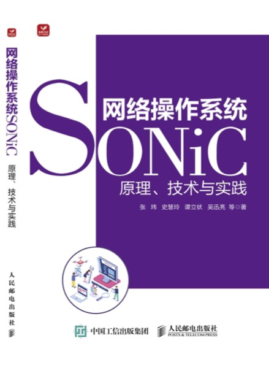

Lizhuang Tan (谭立状)
Lizhuang Tan (谭立状)
Associate Researcher, Ph.D.
Shandong Provincial Key Laboratory of Computer Networks,
Shandong Computer Science Center (National Supercomputer Center in Ji'nan),
Qilu University of Technology (Shandong Academy of Sciences)
tanlzh@sdas.org/lzhtan@qlu.edu.cn
Supercomputing Technology Park, No. 28666, Jingshi East Road, Ji'nan, Shandong, China.
Since July 2022, I have been working in the Computing-Network Integration Research Group of Shandong Computer Science Center (National Supercomputer Center in Ji'nan), China. From October 2024 to October 2025, I am a visiting scholar in Professor James Won-ki Hong's DPNM Lab at Pohang University of Science and Technology, Korea. In June 2022, I received my Ph.D. degree from the National Engineering Research Center of Advanced Network Technologies, Beijing Jiaotong University, China. My research interest is the Network Measurement, Testing and Management, especially Software-defined Networks and Data Center Network. These all serve the National Supercomputing Internet, which is a project that explore how to combine high-performance computing (supercomputing) with wide-area computer networks.

SRv6-based active network telemetry architecture and its path planning strategy (CIA, 2019), Telemetry flow selection method based on multi-objective optimization and its orchestration solver based on non-dominated sorting genetic algorithm (APNOMS, 2021), A review of in-band network telemetry research (COMNET, 2021), The discovery and detection mechanism of in-band network telemetry missing-information FindINT (IEEE NETLETT, 2021), In-band network telemetry quality diagnosis and missing information recovery algorithm LossSight (IEEE TNSM, 2021), ByteDance intra-host delay monitoring and fault diagnosis system Hostping (NSDI, 2023).

The prototype of the Software-defined Network Impairment Emulator (ZL202320329297.0, ZL202310224941.2, 2023), including (1) intent-driven network impairment configuration (ZL2023117778457.0, 2023), (2) serial-parallel impairment function combination (HPCC, 2024), and (3) CPU-Tofino collaborative functions implementation, which meets the functional and performance requirements of network impairment emulation, improves the definability of network impairment emulation, and effectively reduces the cost and overhead of network testing.

Data center traffic scheduling method based on two-sided matching model (ETT, 2022), The lossless RDMA watermark automatic tuning mechanism ByteTuning (IEEE TCC, 2025), Data center QUIC transmission protocol DCQUIC (INFOCOM ICCN, 2021), Modular QUIC protocol development prototype (CoNEXT Poster, 2020), QUIC proactive connection migration mechanism for heterogeneous networks (MobiQuitous, 2020), MPDTP block scheduling mechanism in multi-path transmission scenarios (NaNA, 2021).
Network Operating System SONiC: Principles, Technologies and Practices was published and released.
ByteTuning is accepted by IEEE Transacitons on Cloud Computing.
A project on Buffer Management of Data Center Networking was funded by the National Natural Science Foundation of China.
I have been selected for the Korea-China Young Scientists Exchange Program and will be conducting network management research at POSTECH.

A project on In-band Network Telemetry was funded by the Natural Science Foundation of Shandong.
LossSight won the second prize of the 25th China Robotics and Artificial Intelligence Competition.
We will host NaNA'23 in Qingdao, P.R.China in Aug. 2023, and welcome submissions on networking.
A project on FPGA-based offloading in data centers was funded by the Natural Science Foundation of Shandong and Inspur Inc.
Path-Flow Matching was selected as FEATURED COVER PAPER by Wiley Transactions on Emerging Telecommunications Technologies.
Participated in the China Computing Conference 2022 and made a report.
Got the PhD from Beijing Jiaotong University. Thanks to my mentor, Prof. Wei Su.